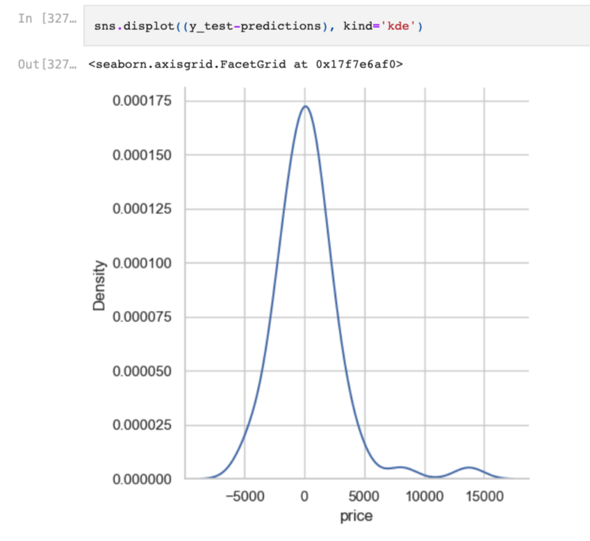

Hi, my main areas of interest are exploratory data analysis, data visualization, data modelling, data preprocessing, machine learning, deep learning and natural language processing.
My aim is to provide business solutions using data and engineering.
My Toolkit:
Python (NumPy, Pandas, Matplotlib, Seaborn, Ploty, scikit-learn, TensorFlow.keras, spaCy, Hugging Face Transformers), Tableau, SQL, RDBMS(MySQL), NoSQL(MongoDB), Excel, Linux

Text classification with transformer-based models.
Fraud detection on credit card data using random forest machine learning algorithm.

Training a machine learning model with a linear regression algorithm that can predict the optimal car sales/buying price based on the car features on an experimental dataset.
In this project, we are examining a group of stock data in a specific timeframe. We aim to answer some key questions
that might give important insights about the Silicon Valley Bank crash.
In this project, the largest volcanic eruptions in history were visualized by using data cleaning and data visualization skills.
In this project, based on the sample data we have, certain covid 19 charts were obtained and inferences were made based on them.
In this project, we are creating and training a deep neural network that can automatically classify triangle and rectangle shapes into two separate classes. In detail, the project includes data collection, data preprocessing, model creation and training, and lastly model evaluation.
In this project, we are designing and creating a relational database system that will optimize the stock management system of a specific factory.
Then we are testing the benefits of the system with SQL queries.